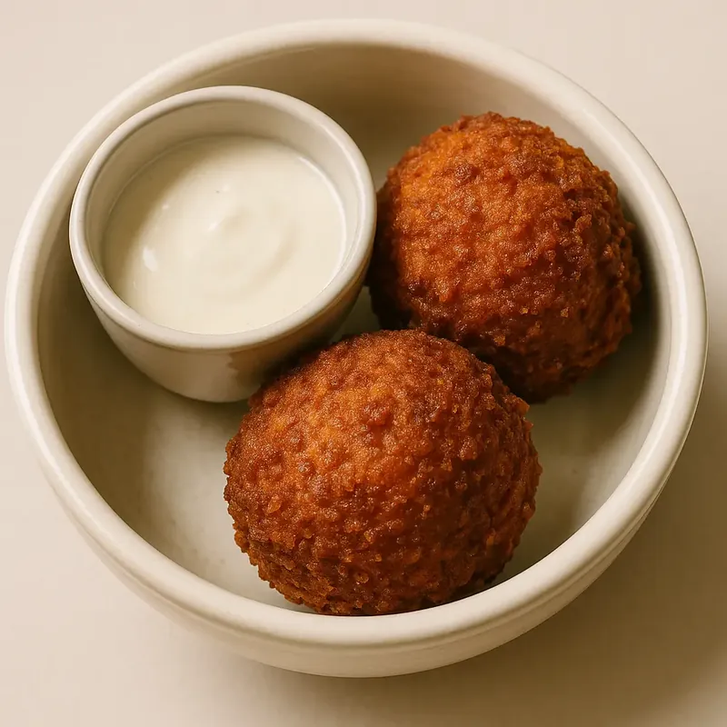

Le vrai falafel libanais
Chez YallaEat, le falafel n'est pas un simple accompagnement. C'est une institution, préparée selon la recette traditionnelle libanaise, sans compromis.

🌱 Pois chiches frais
Nous utilisons exclusivement des pois chiches secs trempés pendant 24 heures, jamais de conserve. Ce trempage long permet d'obtenir une texture parfaite : légère, aérée et fondante à l'intérieur. C'est la base d'un vrai falafel libanais, riche en protéines végétales (13g pour 100g de pois chiches).
🌿 Épices maison
Notre mélange d'épices est préparé chaque matin en cuisine : cumin torréfié, graines de coriandre, ail frais, persil plat et coriandre fraîche. Les herbes sont hachées à la main pour libérer tous leurs arômes. Chaque bouchée explose de saveurs authentiques du Liban.
🔥 Friture minute
Nos falafels sont frits à la commande dans une huile végétale à température contrôlée (180°C). Résultat : une croûte dorée et croustillante qui enveloppe un coeur vert. Pas de falafels réchauffés, pas de micro-ondes. Fraîcheur garantie à chaque service.
Nos formats falafel
Bowl généreux, sandwich à emporter ou falafels à la pièce : choisissez votre format préféré.
Bowl Falafel
Notre bowl signature avec 4 falafels croustillants, riz basmati, houmous maison, taboulé, concombres marinés et sauce tahini. Un repas complet, équilibré et 100% vegan. Généreux et rassasiant.

Dès 9,90 €
🌯Sandwich Falafel
Falafels, crudités fraîches (tomate, concombre, salade), sauce tahini et concombres marinés maison, le tout roulé dans un pain libanais souple. Idéal pour la pause déjeuner à emporter.

Dès 7,90 €
Falafel à la pièce
Envie de goûter ou de compléter votre plat ? Commandez nos falafels à l'unité. Parfait aussi pour un apéro libanais entre amis ou en famille. Croustillant garanti.
Dès 1,80 €
Pourquoi nos falafels sont différents
👨🍳 Fait maison vs industriel
La majorité des restaurants utilisent des falafels surgelés ou des mélanges en poudre. Chez YallaEat, tout est fait maison, de A à Z : trempage des pois chiches, broyage, assaisonnement, façonnage à la main et friture minute. Vous sentez la différence dès la première bouchée.
🌱 100% vegan
Nos falafels sont naturellement vegan : pois chiches, herbes, épices et huile végétale. Pas d'œuf, pas de produit laitier, pas de gluten ajouté. Un choix sain et éthique qui convient à tous les régimes alimentaires, sans sacrifier le goût ni la texture.
💪 Riche en protéines
Les pois chiches apportent 13g de protéines pour 100g, faisant du falafel une excellente source de protéines végétales. Combiné avec notre riz basmati ou notre pain libanais, c'est un repas complet en acides aminés. Idéal pour les sportifs et ceux qui réduisent la viande.
✅ Sans gluten
Contrairement à de nombreux falafels industriels qui contiennent de la farine de blé, nos falafels sont naturellement sans gluten. La texture est obtenue uniquement grâce aux pois chiches broyés et aux herbes fraîches. Adapté aux personnes intolérantes ou sensibles au gluten.
Questions fréquentes
Oui, 100% faits maison. Nos pois chiches sont trempés pendant 24 heures puis broyés avec des herbes fraîches (persil, coriandre) et des épices (cumin, ail). Chaque falafel est façonné à la main et frit à la commande. Aucun produit industriel, aucun surgelé.
Oui, nos falafels sont 100% vegan. Ils sont composés uniquement de pois chiches, herbes fraîches, épices et huile végétale. Pas d'œuf, pas de produit laitier, pas de viande. Ils conviennent également aux régimes végétariens et sont naturellement sans gluten.
Absolument ! Vous pouvez commander nos falafels à la pièce dès 1,80 €. C'est idéal pour goûter, compléter un plat ou préparer un apéro libanais. Disponible en click & collect et sur place au 29 Rue de Bourgogne, Lyon 9.